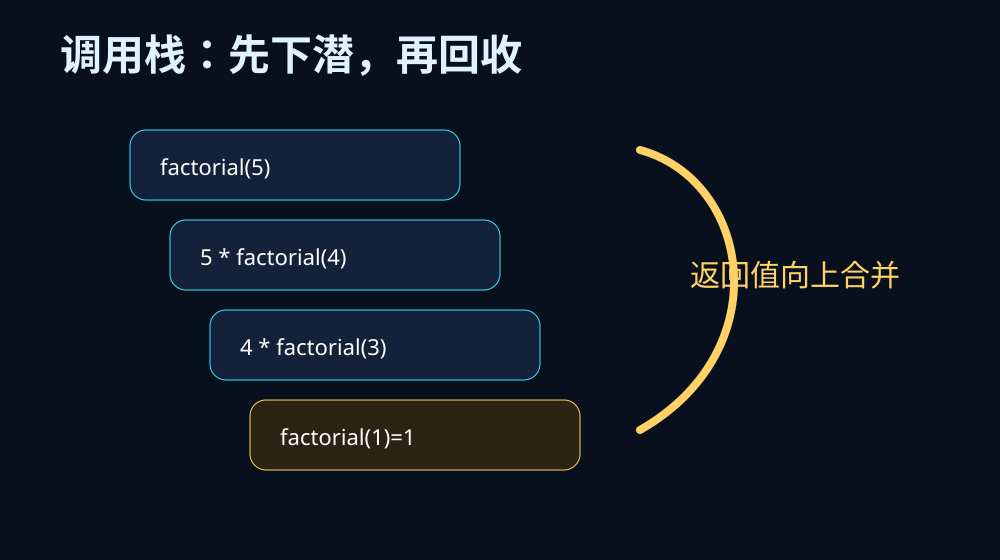
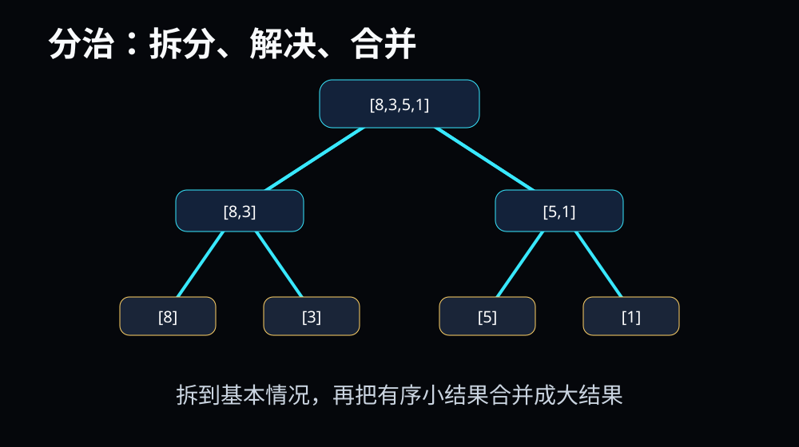

递归最难的不是代码，而是脑子里同时出现“现在这一层”和“下一层”。选一个入口，后面所有互动都会回到它。
基本情况、递归调用、规模收缩。少一个都危险。
能说清每一层参数、返回值和等待中的表达式。
分解、解决、合并，用二分查找和归并排序验证。
判断无限递归、重复计算和栈空间消耗。


递归看调用栈，分治看树形拆分。后面的交互会把这两张图变成可操作过程。
下面哪句话最准确？
如果一个问题可以写成“先解决一个更小的同类问题，再补上当前这一层的动作”，就有递归结构。
| 要素 | 问题 |
|---|---|
| 基本情况 | 什么时候不再调用自己？ |
| 递归调用 | 调用的是不是同类问题？ |
| 规模收缩 | 参数是否一步步接近出口？ |
先展开调用栈，观察每一层都在等待更小问题的答案。
把原问题拆成规模更小、结构相同或相近的子问题。
对子问题继续求解；小到基本情况时直接给答案。
把子问题答案合并成原问题答案。归并排序的关键就在这里。
递归强调“自我调用”；分治强调“拆分与合并”。两者经常一起出现，但不是同一个概念。
目标数藏在有序数组中。你每点一次，算法都会比较中间值，然后排除一半区间。
拆到单个元素很容易，难点是把两个有序小数组合并成一个更大的有序数组。
视频用于连续讲解：递归先展开调用栈，再从基本情况开始回收返回值。
| 维度 | 递归 | 循环 |
|---|---|---|
| 表达 | 贴近树、分治、数学定义 | 贴近连续步骤和状态更新 |
| 空间 | 占调用栈 | 通常更节省栈空间 |
| 风险 | 出口错误会爆栈 | 条件错误会死循环 |
如果问题像树一样分叉、像俄罗斯套娃一样嵌套，递归通常清晰。如果只是从 1 加到 n，循环可能更直接。
思路：一个列表的最大值，可以看成“第一个元素”和“剩余列表最大值”的较大者。
出口：len(a)==1
同类问题：max_rec(a[1:])
规模收缩：列表长度减少 1
合并：max(a[0], rest)
递归处理自然数 n，目标是从 n 一直处理到 0。哪个出口最稳？
n → n-1 → n-2 → ...
最坏可能看 n 次。
n → n/2 → n/4 → n/8 ...
规模每次减半，约 log₂ n 层。
拆分 log n 层，每层合并 n 个元素
总量约 n log n。
拖动参数，观察递归树如何膨胀。你会直观看到：分支越多、层数越深，调用次数增长越快；每层工作量不同，复杂度也不同。
这里不再手写播放器。下方模块会由 `teachany-audio-player.js` 自动渲染曲目卡片，并在页面底部生成连续播放条。
本课件不再手写本地反馈表。`feedback-widget.js` 会在页面底部和右下角生成标准“提交学习反馈”入口，统一跳转到 `/feedback.html` 并携带 course_id、node_id、subject、grade。
递归把问题写成“我先相信一个更小的自己”；分治把问题组织成“拆开解决，再合并答案”。
没有出口，所有优雅都会变成爆栈。
每一层都要知道自己在等什么。
能拆不算会，能合才是算法。